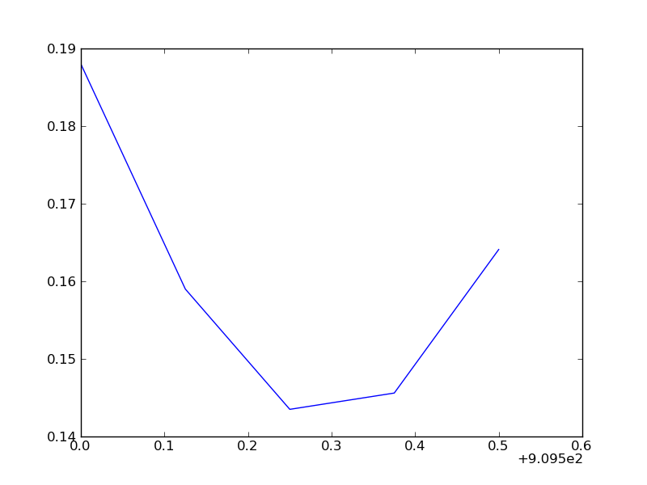

- format wiki
This cookbook example contains a module that implements a reader for a LAS (Log ASCII Standard) well log file (LAS 2.0). See the Canadian Well Logging Society page about this format for more information.
#!python
"""LAS File Reader
The main class defined here is LASReader, a class that reads a LAS file
and makes the data available as a Python object.
"""
# Copyright (c) 2011, Warren Weckesser
#
# Permission to use, copy, modify, and/or distribute this software for any
# purpose with or without fee is hereby granted, provided that the above
# copyright notice and this permission notice appear in all copies.
#
# THE SOFTWARE IS PROVIDED "AS IS" AND THE AUTHOR DISCLAIMS ALL WARRANTIES
# WITH REGARD TO THIS SOFTWARE INCLUDING ALL IMPLIED WARRANTIES OF
# MERCHANTABILITY AND FITNESS. IN NO EVENT SHALL THE AUTHOR BE LIABLE FOR
# ANY SPECIAL, DIRECT, INDIRECT, OR CONSEQUENTIAL DAMAGES OR ANY DAMAGES
# WHATSOEVER RESULTING FROM LOSS OF USE, DATA OR PROFITS, WHETHER IN AN
# ACTION OF CONTRACT, NEGLIGENCE OR OTHER TORTIOUS ACTION, ARISING OUT OF
# OR IN CONNECTION WITH THE USE OR PERFORMANCE OF THIS SOFTWARE.
import re
import keyword
import numpy as np
def isidentifier(s):
if s in keyword.kwlist:
return False
return re.match(r'^[a-z_][a-z0-9_]*$', s, re.I) is not None
def _convert_to_value(s):
try:
value = int(s)
except ValueError:
try:
value = float(s)
except ValueError:
value = s
return value
class LASError(Exception):
pass
class LASItem(object):
"""This class is just a namespace, holding the attributes 'name',
'units', 'data', 'value', and 'descr'. 'value' is the numerical
value of 'data', if it has a numerical value (specifically, if
int() or float() don't raise an exception when given the value
of the 'data' attribute).
A class method, from_line(cls, line), is provided to parse
a line from a LAS file and create a LASItem instance.
"""
def __init__(self, name, units='', data='', descr=''):
self.name = name
self.units = units
self.data = data
self.value = _convert_to_value(data)
self.descr = descr
def __str__(self):
s = ("name='%s', units='%s', data='%s', descr='%s'" %
(self.name, self.units, self.data, self.descr))
return s
def __repr__(self):
s = str(self)
return "LASItem(%s)" % s
@classmethod
def from_line(cls, line):
first, descr = line.rsplit(':', 1)
descr = descr.strip()
name, mid = first.split('.', 1)
name = name.strip()
if mid.startswith(' '):
# No units
units = ''
data = mid
else:
units_data = mid.split(None, 1)
if len(units_data) == 1:
units = units_data[0]
data = ''
else:
units, data = units_data
return LASItem(name=name, units=units, data=data.strip(),
descr=descr.strip())
def _read_wrapped_row(f, n):
"""Read a "row" of data from the Ascii section of a "wrapped" LAS file.
`f` must be a file object opened for reading.
`n` is the number of fields in the row.
Returns the list of floats read from the file.
"""
depth = float(f.readline().strip())
values = [depth]
while len(values) < n:
new_values = [float(s) for s in f.readline().split()]
values.extend(new_values)
return values
def _read_wrapped_data(f, dt):
data = []
ncols = len(dt.names)
while True:
try:
row = _read_wrapped_row(f, ncols)
except Exception:
break
data.append(tuple(row))
data = np.array(data, dtype=dt)
return data
class LASSection(object):
"""Represents a "section" of a LAS file.
A section is basically a collection of items, where each item has the
attributes 'name', 'units', 'data' and 'descr'.
Any item in the section whose name is a valid Python identifier is
also attached to the object as an attribute. For example, if `s` is a
LASSection instance, and the corresponding section in the LAS file
contained this line:
FD .K/M3 999.9999 : Fluid Density
then the item may be referred to as `s.FD` (in addition to the longer
`s.items['FD']`).
Attributes
----------
items : dict
The keys are the item names, and the values are LASItem instances.
names : list
List of item names, in the order they were read from the LAS file.
"""
def __init__(self):
# Note: In Python 2.7, 'items' could be an OrderedDict, and
# then 'names' would not be necessary--one could use items.keys().
self.items = dict()
self.names = []
def add_item(self, item):
self.items[item.name] = item
self.names.append(item.name)
if isidentifier(item.name) and not hasattr(self, item.name):
setattr(self, item.name, item)
def display(self):
for name in self.names:
item = self.items[name]
namestr = name
if item.units != '':
namestr = namestr + (" (%s)" % item.units)
print "%-16s %-30s [%s]" % (namestr, "'" + item.data + "'",
item.descr)
class LASReader(object):
"""The LASReader class holds data from a LAS file.
This reader only handles LAS 2.0 files (as far as I know).
Constructor
-----------
LASReader(f, null_subs=None)
f : file object or string
If f is a file object, it must be opened for reading.
If f is a string, it must be the filename of a LAS file.
In that case, the file will be opened and read.
Attributes for LAS Sections
---------------------------
version : LASSection instance
This LASSection holds the items from the '~V' section.
well : LASSection instance
This LASSection holds the items from the '~W' section.
curves : LASection instance
This LASSection holds the items from the '~C' section.
parameters : LASSection instance
This LASSection holds the items from the '~P' section.
other : str
Holds the contents of the '~O' section as a single string.
data : numpy 1D structured array
The numerical data from the '~A' section. The data type
of the array is constructed from the items in the '~C'
section.
Other attributes
----------------
data2d : numpy 2D array of floats
The numerical data from the '~A' section, as a 2D array.
This is a view of the same data as in the `data` attribute.
wrap : bool
True if the LAS file was wrapped. (More specifically, this
attribute is True if the data field of the item with the
name 'WRAP' in the '~V' section has the value 'YES'.)
vers : str
The LAS version. (More specifically, the value of the data
field of the item with the name 'VERS' in the '~V' section).
null : float or None
The numerical value of the 'NULL' item in the '~W' section.
The value will be None if the 'NULL' item was missing.
null_subs : float or None
The value given in the constructor, to be used as the
replacement value of each occurrence of `null_value` in
the log data. The value will be None (and no substitution
will be done) if the `null_subs` argument is not given to
the constructor.
start : float, or None
Numerical value of the 'STRT' item from the '~W' section.
The value will be None if 'STRT' was not given in the file.
start_units : str
Units of the 'STRT' item from the '~W' section.
The value will be None if 'STRT' was not given in the file.
stop : float
Numerical value of the 'STOP' item from the '~W' section.
The value will be None if 'STOP' was not given in the file.
stop_units : str
Units of the 'STOP' item from the '~W' section.
The value will be None if 'STOP' was not given in the file.
step : float
Numerical value of the 'STEP' item from the '~W' section.
The value will be None if 'STEP' was not given in the file.
step_units : str
Units of the 'STEP' item from the '~W' section.
The value will be None if 'STEP' was not given in the file.
"""
def __init__(self, f, null_subs=None):
"""f can be a filename (str) or a file object.
If 'null_subs' is not None, its value replaces any values in the data
that matches the NULL value specified in the Version section of the LAS
file.
"""
self.null = None
self.null_subs = null_subs
self.start = None
self.start_units = None
self.stop = None
self.stop_units = None
self.step = None
self.step_units = None
self.version = LASSection()
self.well = LASSection()
self.curves = LASSection()
self.parameters = LASSection()
self.other = ''
self.data = None
self._read_las(f)
self.data2d = self.data.view(float).reshape(-1, len(self.curves.items))
if null_subs is not None:
self.data2d[self.data2d == self.null] = null_subs
def _read_las(self, f):
"""Read a LAS file.
Returns a dictionary with keys 'V', 'W', 'C', 'P', 'O' and 'A',
corresponding to the sections of a LAS file. The values associated
with keys 'V', 'W', 'C' and 'P' will be lists of Item instances. The
value associated with the 'O' key is a list of strings. The value
associated with the 'A' key is a numpy structured array containing the
log data. The field names of the array are the mnemonics from the
Curve section of the file.
"""
opened_here = False
if isinstance(f, basestring):
opened_here = True
f = open(f, 'r')
self.wrap = False
line = f.readline()
current_section = None
current_section_label = ''
while not line.startswith('~A'):
if not line.startswith('#'):
if line.startswith('~'):
if len(line) < 2:
raise LASError("Missing section character after '~'.")
current_section_label = line[1:2]
other = False
if current_section_label == 'V':
current_section = self.version
elif current_section_label == 'W':
current_section = self.well
elif current_section_label == 'C':
current_section = self.curves
elif current_section_label == 'P':
current_section = self.parameters
elif current_section_label == 'O':
current_section = self.other
other = True
else:
raise LASError("Unknown section '%s'" % line)
elif current_section is None:
raise LASError("Missing first section.")
else:
if other:
# The 'Other' section is just lines of text, so we
# assemble them into a single string.
self.other += line
current_section = self.other
else:
# Parse the line into a LASItem and add it to the
# current section.
m = LASItem.from_line(line)
current_section.add_item(m)
# Check for the required items whose values we'll
# store as attributes of the LASReader instance.
if current_section == self.version:
if m.name == 'WRAP':
if m.data.strip() == 'YES':
self.wrap = True
if m.name == 'VERS':
self.vers = m.data.strip()
if current_section == self.well:
if m.name == 'NULL':
self.null = float(m.data)
elif m.name == 'STRT':
self.start = float(m.data)
self.start_units = m.units
elif m.name == 'STOP':
self.stop = float(m.data)
self.stop_units = m.units
elif m.name == 'STEP':
self.step = float(m.data)
self.step_units = m.units
line = f.readline()
# Finished reading the header--all that is left is the numerical
# data that follows the '~A' line. We'll construct a structured
# data type, and, if the data is not wrapped, use numpy.loadtext
# to read the data into an array. For wrapped rows, we use the
# function _read_wrapped() defined elsewhere in this module.
# The data type is determined by the items from the '~Curves' section.
dt = np.dtype([(name, float) for name in self.curves.names])
if self.wrap:
a = _read_wrapped_data(f, dt)
else:
a = np.loadtxt(f, dtype=dt)
self.data = a
if opened_here:
f.close()
if __name__ == "__main__":
import sys
las = LASReader(sys.argv[1], null_subs=np.nan)
print "wrap? ", las.wrap
print "vers? ", las.vers
print "null =", las.null
print "start =", las.start
print "stop =", las.stop
print "step =", las.step
print "Version ---"
las.version.display()
print "Well ---"
las.well.display()
print "Curves ---"
las.curves.display()
print "Parameters ---"
las.parameters.display()
print "Other ---"
print las.other
print "Data ---"
print las.data2d
Source code: .. image:: LASReader_attachments/las.py
Here’s an example of the use of this module:
>>> import numpy as np
>>> from las import LASReader
>>> sample3 = LASReader('sample3.las', null_subs=np.nan)
>>> print sample3.null
-999.25
>>> print sample3.start, sample3.stop, sample3.step
910.0 909.5 -0.125
>>> print sample3.well.PROV.data, sample3.well.UWI.data
ALBERTA 100123401234W500
>>> from matplotlib.pyplot import plot, show
>>> plot(sample3.data['DEPT'], sample3.data['PHIE'])
[<matplotlib.lines.Line2D object at 0x4c2ae90>]
>>> show()
It creates the following plot:
The sample LAS file is here: